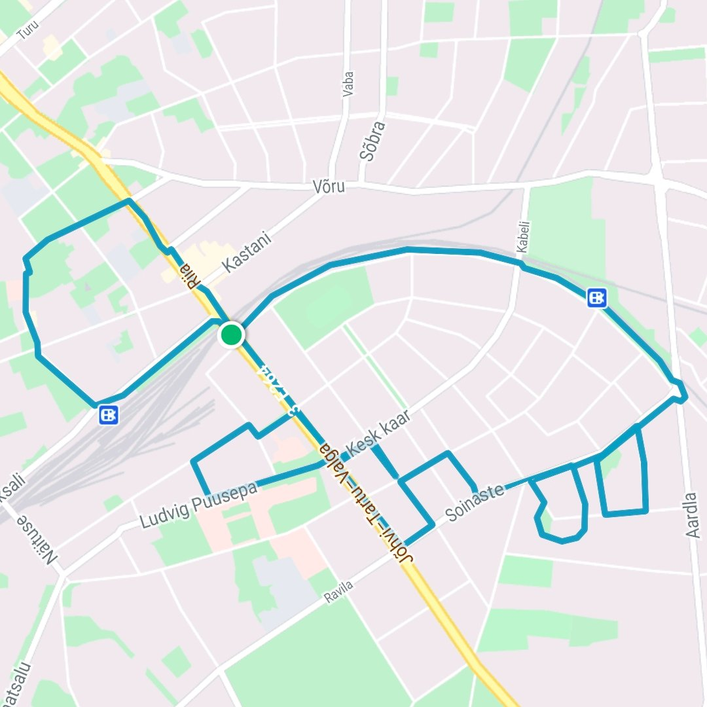
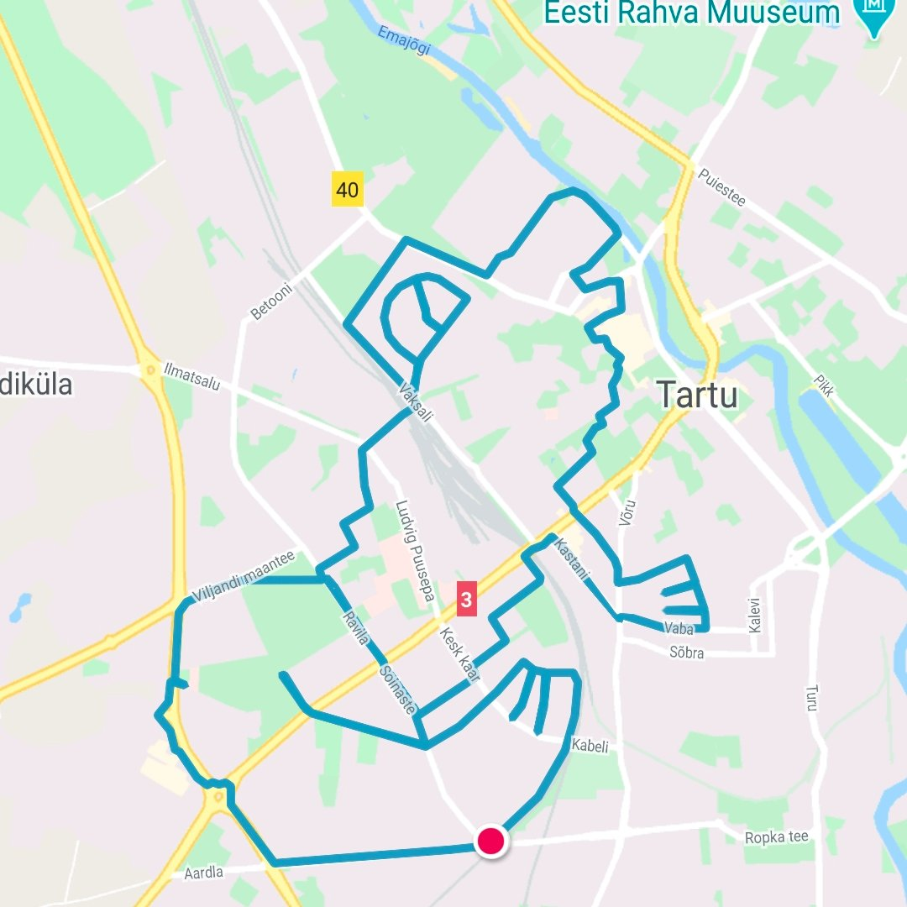
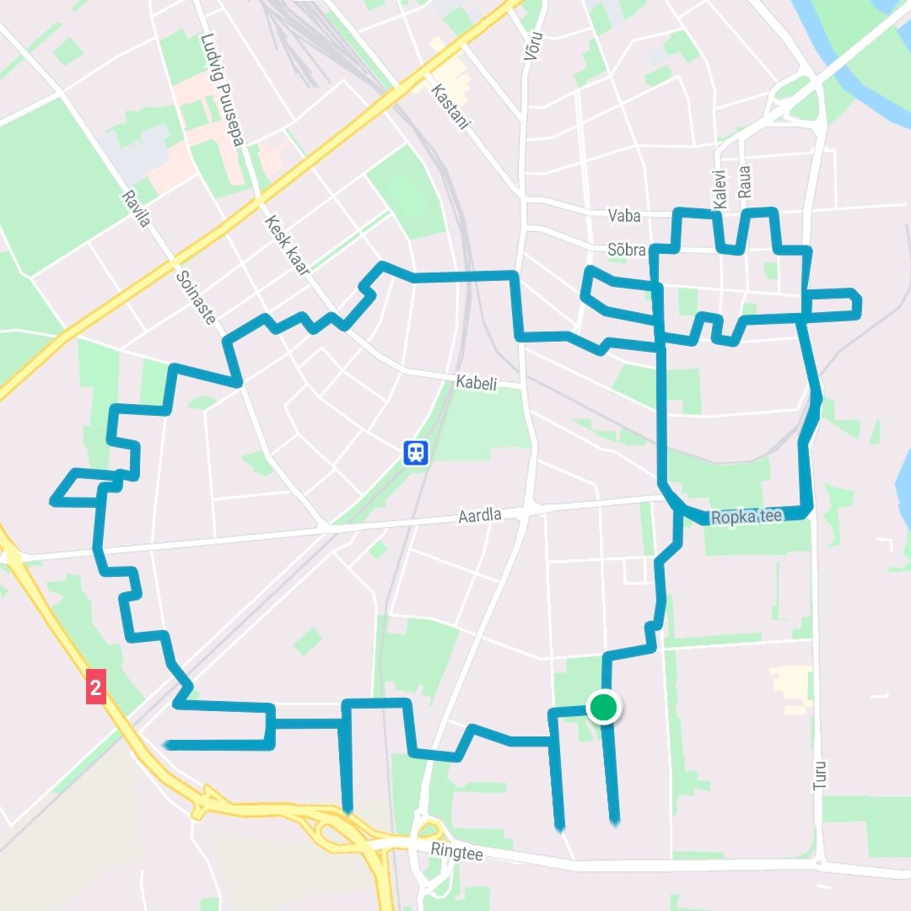
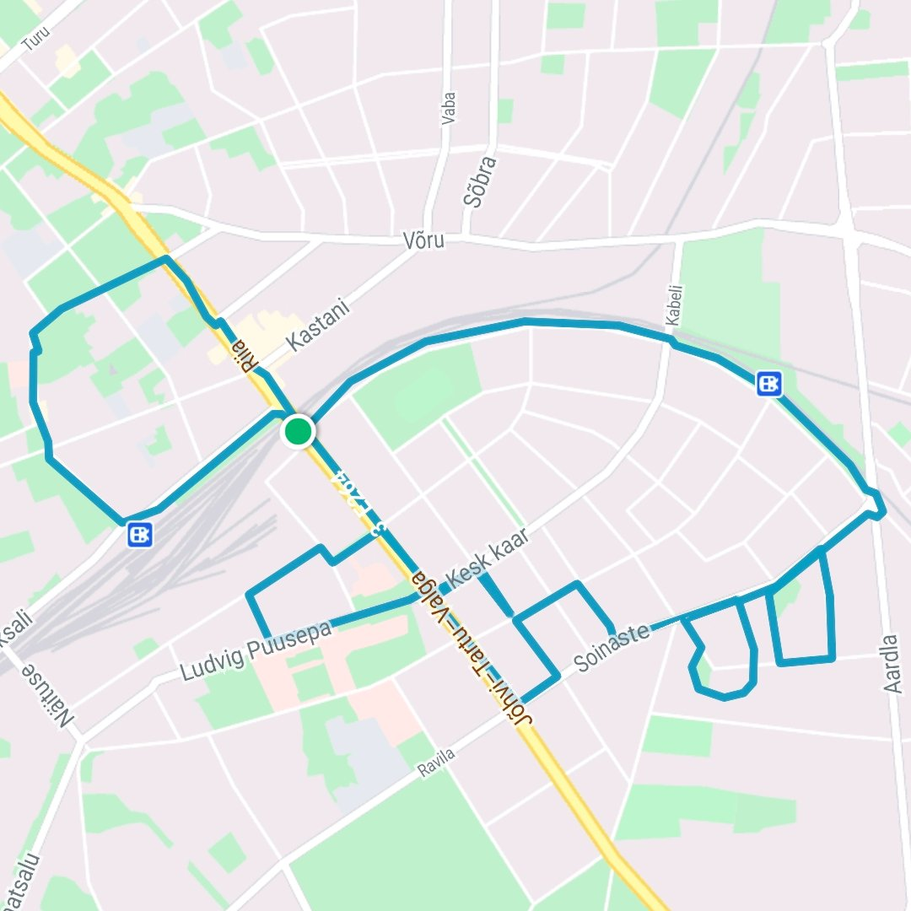
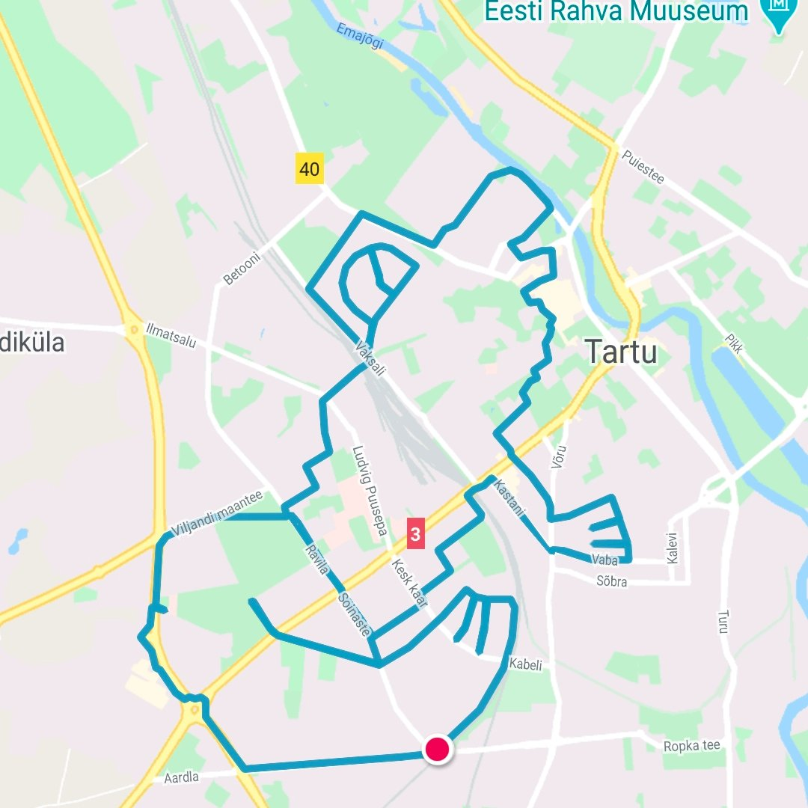
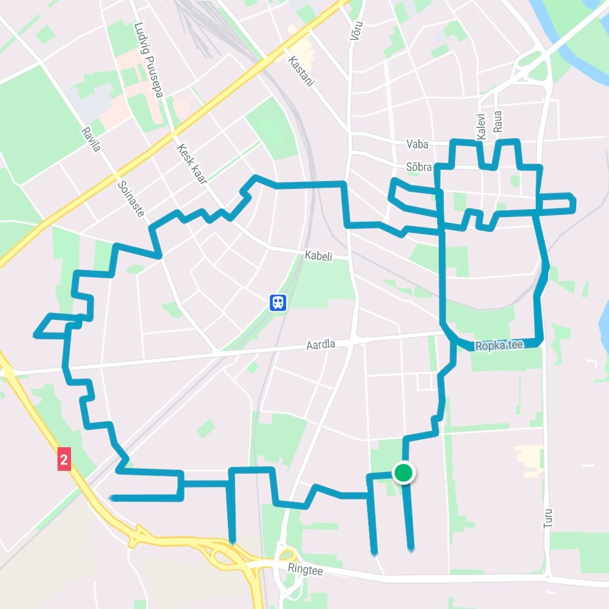
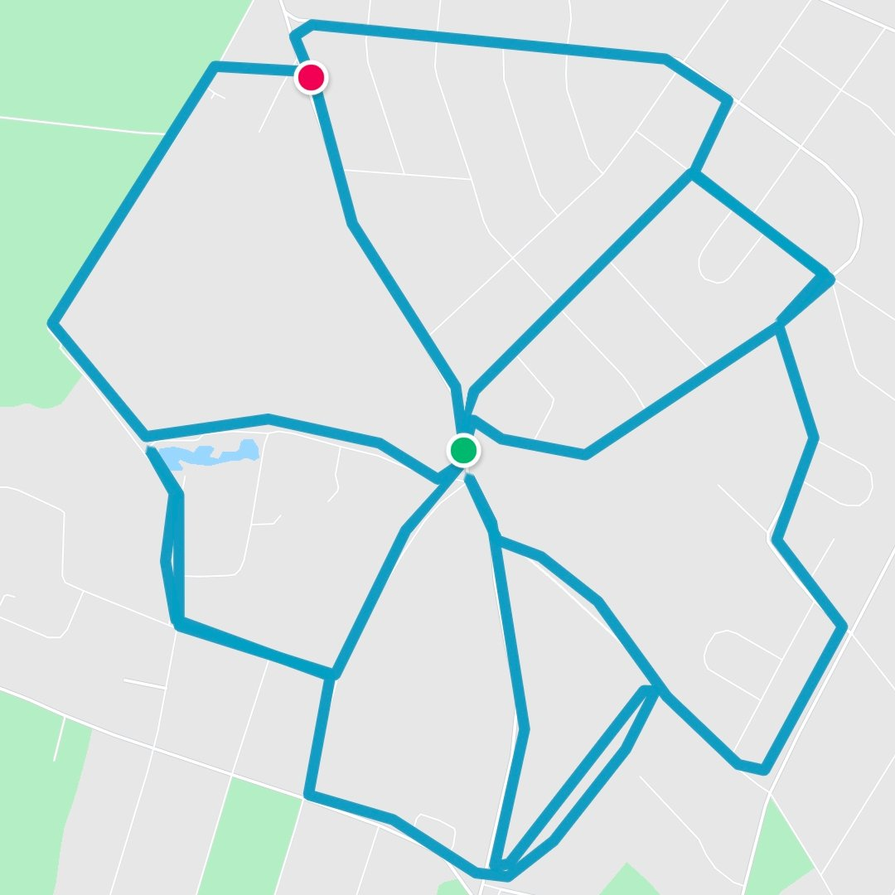
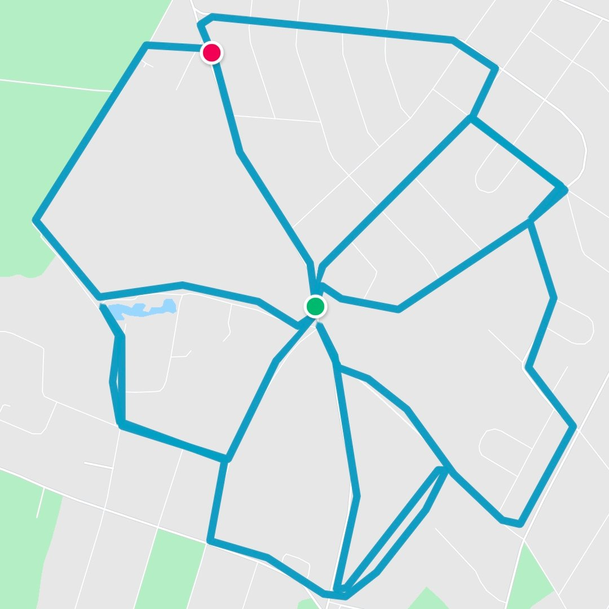

GPS-kunst
GPS-kunst on joonistamismeetod, kus kunstnik jälgib plaanitud teekonda ning joonistab kaardile pildi või teksti. Enamasti kasutatakse jalgsi või rattaga liikumist, sest nendega saab kõige vabamalt liikuda. Suuremate joonistuste puhul kasutatakse ka liikumiseks autosid, laevu, lennukeid jpt erinevaid transpordivahendeid
Raja planeerimine
Suur osa kunstist on marsruudi eelnev planeerimine, vastasel juhul on väga raske midagi ilusat joonistada. Planeerides tuleks arvestada, et distants oleks jõukohane ning maastik läbitav. Tee planeerimiseks on erinevaid variante:
- Testida erinevaid variante mõnes rakenduses, kus saab vabalt joonistada kaardile, selline rakendus on näiteks DELFI kaart või On The Go Map.
- Printida välja kaart ning proovida pliiatsi abil midagi ilusat joonistada paberile
Näited GPS-kunstist
Twitteris @gpsartists jagab palju ägedaid GPS-kunsti näiteid. @gpsartists ei ole kunstiteoste autor ja viitab allikale. Lisaks temale võib kunsti leida ka Nathan Rae Facebooki lehelt. Ta on loonud näiteks Queen'ist ja Bohemian Rhapsody filmist inspireerituna teoseid jalgrattast ja Freddie Mercuryst.
 





 



Allikas: Wikipedia
Kõik pildid pärinevad erakogust